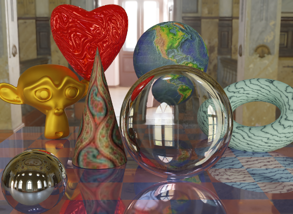
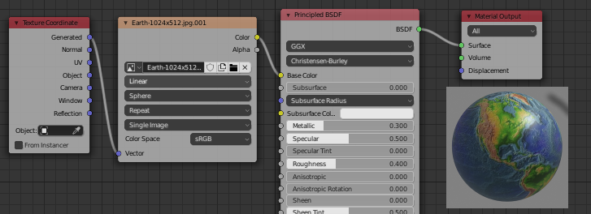
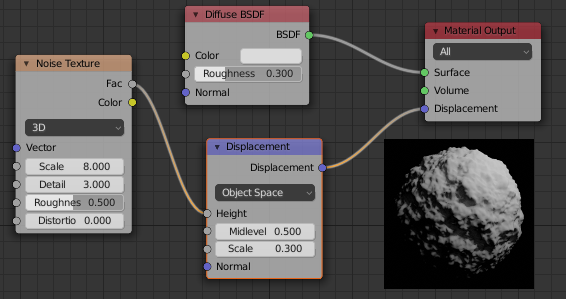

Section B.4
More on Light and Material
Blender has extensive support for light and materials, and we only scratched the surface in Subsection B.1.4. In this section, we will go into a little more depth, but of course this is still only an introduction. In particular, we will look at the Shader Editor, which offers complete control over the design of materials.
B.4.1 Lighting
You can add lighting a scene by adding objects of type light, from the "Light" submenu of the "Add" menu. Note that correct lighting effects are only shown in the 3D View if you set it to use the rendered view style.
When a light object is selected in the 3D View, you can view and edit its properties in the Light Properties tab of the Properties Editor, in the lower right corner of the default screen. You can actually change the basic type of light: Point, Sun, Spot, or Area. Every light has a "Color" property, which determines the color of the light, and a "Power" or "Strength" property, which determines how bright it is. By default, lights cast shadows, but there is a checkbox in the Light Properties that you can turn off if you want to add light to a scene without adding shadows. (You can make an object that doesn't cast any shadows at all, by setting the "Shadow Mode" property of its material to "None" in the "Settings" section of the object's Material Properites.)
An Area light has a shape and size. Larger area lights produce softer (not hard-edged) shadows. But a Point or Spot light also has a size, and you can make it produce soft shadows by increasing its size. (A Sun can never make soft shadows.) For a Spot light, you can set the angle for the cone of light, under the "Spot Shape" section of the Light Properties.
Furthermore, you can add emission color to the material of an object. For example, there is an "Emission" input in the default material to set the emission color. Unlike in OpenGL, an object that has a non-black emission color does not just look brighter; it actually emits light that affects other lights in the scene.
But lighting in Blender is also affected by the background of the scene. You can set the background in the World Properties tab of the Properties Editor. The default background is a dark gray color, which adds something like a bit of ambient light to a scene. But the implementation in this case is that the background is actually considered to emit light of the given color. Note that the background is visible by default in rendered images, but you can get a rendering that includes only actual objects in the scene by turning on the "Transparent" option under the "Film" section of the Render Properties.
The background color does not have to be constant; it can be given by a texture. Usually, you want to use an image texture that wraps nicely around a sphere like the Earth image that I have used in several examples in this textbook. You will want a fairly large image for a nicely detailed background. To use such an image as a background, go to the World Properties, and set the "Color" to be an Environment Texture. (Click the yellow dot to the left of the color input, and select "Environment Texture" from the "Texture" section of the popup menu.) Then click the "Open" button to select the image.
{kind=link}
With an appropriate background image, it is possible to light a scene entirely with the background, with no Light objects or emissive objects in the scene. Here is an example of a rendered scene lit only by a background image:

The background image for this scene is a 4096-by-2048 pixel image from polyhaven.com, a source for fully free HDR images, as well as 3D models and realistic textures. (An .hdr image has more detailed color information than the usual .png or .jpeg. Depending on the software you have, you might not be able to open the image file on your computer, but Blender can use it.) The light for the scene comes mostly from the bright windows in the background image.
The scene shows a checkerboard-patterned platform with several objects standing on it or floating over it. The object on the bottom left is a highly reflective sphere ("Metalic" proprety set to 1.0 and "Roughness" property set to 0.0 in the Material Properties for the sphere). It reflects the background, but the sphere does not use an environment map, like we did for three.js in Subsection 5.3.5; the background is part of the scene, and Blender lighting can handle reflections correctly, even of the background.
The file Blender-hdri-background-example.zip, which can be found in the source folder of the web site download of this textbook, is a compressed archive file that contains the Blender project that produced this image. (The project in the archive uses a jpg version of the much larger hdr background image file. This gives a poorer rendered image, but it makes the file size more reasonable.)
B.4.2 Eevee versus Cycles
The above image was rendered by the Cycles renderer, one of two realistic renderers available in Blender. (You can select the renderer in the Render Properties tab of the Properties Editor.) Blender's default renderer, Eevee, can produce similar, but not identical, images. And with the default settings, the Eevee image will lack certain essential features: the lens won't refract light, and objects in the scene won't show reflections of other objects.
Cycles uses a physically correct global illumination algorithm called path tracing (see Section 8.2). Eevee is a faster renderer that needs to use some tricks to simulate some effects that happen automatically in Cycles. Because some of those tricks can significantly increase the rendering time, they are not enabled by default. They can be enabled in the Render Properties tab of the Propeties editor. Also, for certain kinds of material, you need to change some settings in the Materials Properties for the objects that use those materials. Note that none of these properties are even available if you are using Cycles. Here are the changes you need to make to cover the examples used in this textbook:

Note, however, that there are some things that will work in one of the renderers but not in the other.
B.4.3 The Shader Editor
So far, for configuring materials, we have only looked at using a "Principled Shader" in the Materials Properties. And in fact, it's possible to do all material configuration in the Propreties Editor. However, as materials become more complex, it's much easier to use an editor that lets you visualize the relationships among the various aspects of the configuration. For that, Blender has the Shader Editor (sometimes called the "Node Editor" because it lets you visually manipulate nodes that represent steps in the computation that defines the material). You can change any area of a Blender window into a Shader Editor, using the popup menu in a corner of the area. If you click the "Shader" button at the very top of the window, the window changes to the Shader screen, which has a Shader Editor at the bottom and a 3D View at the top. The Shader Editor should show the material nodes for whatever object is currently selected in the 3D View. (But note that there is a selection menu in the top left corner of the Shader Editor that must be set to "Object" for this to be true. The menu is there because the Shader Editor can be used to edit other things besides materials.) If the selected object does not yet have an assigned material, there will be a "New" button in the header at the top of the Shader Editor.
The Shader Editor visualizes a material as a network of rectangular nodes. A node can have inputs on the left and outputs on the right. An output of one node can be connected to an input of another node (or to inputs of several nodes). The network represents the computation that is used to create the material, and connections represent data flow within that computation. Inputs and outputs are color coded to show the type of data that they represent: gray for numbers, yellow for colors, green for shaders, and blue for vectors. In general, an output should only be connected to an input of the same color, but there are some exceptions. For example, if you connect a color output to a numerical input, then the grayscale equivalent of the color value will be used as the numerical input.
There must be a "Material Output" node, which represents the final material that will be applied to the object. The "Surface" input of the "Material Output" represents the appearance of the surface of the object. The "Surface" input must be attached to the output of a node that computes the material for the surface. There is also a "Volume" input, which I will not discuss at all, and a "Displacement" input which we will look at briefly below.
There is an "Add" menu in the Shader Editor that can be used to add new nodes. You can also hit Shift-A, with the mouse over the Shader Editor, to call up the Add menu. You can set up a connection between two nodes by dragging from an output of one node to an input of another node. You can delete a connection by clicking the output to which it is connected and dragging away from the output before releasing the mouse. Or you can drag to a different input to change the destination of the data.
Here is an example of a node network for a fairly simple material. This combination of "Diffuse" and "Glossy" is the sort of thing that was often done to make basic materials before the Principled Shader existed, and it can still be a lot less intimidating.

To make this material, I started with a New material, and deleted the Principled Shader that was added by default to a new material, because I wanted to use a different shader to compute the "Surface" input for the "Material Output" node. Shader nodes can be found in the "Shader" submenu of the Add menu. I could have just used a "Diffuse BSDF" shader node, which would have produced a fully diffuse color. Or I could have just used a "Glossy BSDF," which would have produced a shiny, metal-like material. But I wanted a mixture of the two types of color, so I added a "Mix Shader," which can combine the outputs from two other shaders. I then added a "Diffuse BSDF" and a "Glossy BSDF" and connected their outputs to the two inputs of the Mix Shader. The "Fac," or "Factor," input of the Mix Shader determines how much of each shader input goes into the mix. I set it to 0.75, which means that 25% of the Mix Shader output comes from the Diffuse BSDF and 75% comes from the Glossy BSDF. I also set the colors for the Diffuse and Glossy shaders (by clicking their color samples next to the word "Color").
To show what the material looks like, I added a picture of a torus that uses it to the illustration — this is not something that would be shown in the actual Shader Editor.
A numerical input like the "Fac" input of a Mix shader can be set by hand, or its value can come from another node. If you connect the input to an output from another node, you can get a value that varies from point-to-point on a surface. Here is an example where the degree of mixing between two colors comes from a texture, giving a color that varies from point to point on an object.

I could have done this example using another Mix Shader, but I decided to use the default Principled Shader and connect its Base Color input to the output from a color mixer node. The node that does the color mixing is of type "MixRGB," which can be found in the "Color" submenu of the "Add" menu. The colors for the mix are set here as constant values, but the "Fac" input comes from a Wave Texture node (found in the "Texture" submenu of the "Add" menu). With the settings shown for the Wave texture, this gives a marble-like pattern of color. I tried connecting the output from the Wave texture directly to the "Fac" input, but I wanted the bands of red color in the material to be narrower. To make that happen, I inserted a "Math" node — from the "Converter" submenu of the "Add" menu — between the Wave Texture node and the Mix node. The Math node has a selection menu to say which mathematical operation it performs on its two inputs. I selected "Power," so the math node computes the output from the wave texture raised to the power 5.000. (I should have used the "Fac" output of the Wave Texture rather than the "Color" output, but the Fac output just gives the grayscale level of the Color output, which is the same thing that you get when you connect a color output to a numerical input. So the two outputs are actually equivalent for this example.)
In the next example, the base color of the material comes from an image texture. In the sample render that is shown in the following illustration, the texture is applied to a smooth-shaded isosphere. The texture is represented by an "Image Texture" node, from the "Texture" submenu of the Add menu. We already saw in Subsection B.1.4 how to apply a texture to an object. The problem here is that the default mapping of the texture to the isosphere isn't correct, so I needed to add another node to change the mapping. The "Vector" input of the Image Texture node sets the texture coordinates for mapping. I added a "Texture Coordinates" node, from the "Input" submenu of the Add menu, and connected the "Generated" output from the Texture Coordinate node to the Vector input of the Image Texture node. I also had to change the center selection menu in the Image Texture node from the default "Flat" to "Sphere." That gave the correct mapping in this case.

It turns out that the texture would work fine on a UVSphere with no extra nodes. The default texture mapping uses the UV texture coordinates of the object. A UVSphere comes with textures coordinates that map the texture once around the sphere, which is what I wanted here. You could get exactly the same result by adding a Texture Coordinate node and connecting the UV output from that node to the Vector input of the Image Texture node. For the Icosphere, however, the default UV coordinates were not correct.
The "Generated" output of the Texture Coordinates node means that the output value is given by the object coordinates of the object to which the material is applied. (Generated texture coordinates are discussed in Subsection 7.3.2.) The central select menu in the Image Texture node, which is set to Sphere in the example, determines an extra function that is applied to the 3D Vector input, to map it to the 2D coordinate space of the image. The default, "Flat," means that the third component of the vector input is simply dropped.
By the way, you might want to apply a texture transformation to the texture coordinates, to fit the texture better to the object. (See Subsection 4.3.4.) For that, you can insert a computation between the Texture Coordinate node and the Texture Image node. You can use a "Vector Math" node, from the "Converter" submenu of the Add menu, to add an offset to the texture coordinates or to multiply them by scaling factors. If you want to do both, you can use two Vector Math nodes. There is also a "Mapping" node in the "Vector" submenu that can apply a combined scale, rotate, and translate.
Next, we look at an example that uses the "Displacement" input of the Material Output node. We saw in Subsection B.2.5 that a Displace constraint can be used in Blender to do displacement mapping. It turns out that you can also do displacement mapping in the Shader Editor, using a Displacement Node attached to the Displacement input of the Material Output node. The "Height" input of the Displacement node gives the amount of displacement, which would ordinarily come from a texture node.
In Subsection 7.3.4, we looked at bump mapping, which makes it look as if the orientation of a surface is changing from point to point by adjusting its normal vectors. bump mapping is basically the cheap version of displacement mapping. When you use displacement in a material, the Eevee renderer will actually do bump mapping. The Cycles rendered can do either bump mapping or displacement mapping, but it will do bump mapping by default. To get Cycles to do actual displacement mapping based on the material, you have to go to the "Settings" section of the Material Properties and change the "Displacement" input from "Bump Only" to "Displacement Only." But note that you will still see actual displacement only in a rendered view!
The sample render for my example uses displacement mapping on an icosphere. You can see that the actual geometry has been modified:

For displacement mapping to work, the surface must be finely subdivided. For the icosphere in the example, I used 4 subdivisions when I created it, and then I added a Subdivision Surface modifier with three levels of subdivision to divide it even more finely.
Transparent materials that refract light, like glass, can be modeled easily in Blender. The lens in the image at the start of this section was made entirely in a Principled Shader simply by setting the "Transmission" value to 1.0 and the "Roughness" value to 0.0. (I also set the IOR in the shader to 0.5, which is not at all physically realistic. But I liked how it looked.) Remember that to see the effect when using the Eevee renderer, you need to adjust render and material properties as shown in the illustration earlier in this section.
Note that even though the lens transmits 100% of light, it is not simply invisible, since it bends light that passes through it. Simple transparency, without bending of light, can be done with alpha blending, where the alpha component of the color determines the degree of opaqueness. The Principled Shader has an "Alpha" input that represents the alpha value for the material color. Setting the value to zero would make the object completely invisible. Setting it to a value between 0.0 and 1.0 makes the object translucent. (Again, if you want to see the effect in Eevee, you need to change the "Blend Mode" in the material settings; refer back to the above illustration.)
You can also control transparency using a Transparent Shader in the Shader Editor. For no good reason, I decided to make a material in which the alpha component varies from point to point, with the degree of transparency coming from a wave texture. In the sample render, the material is used on a cylinder. I put an orange inside the cylinder so that you can see the transparency (so to speak). You can even see the shadows of the opaque parts on the orange. Here is the node setup that I used: